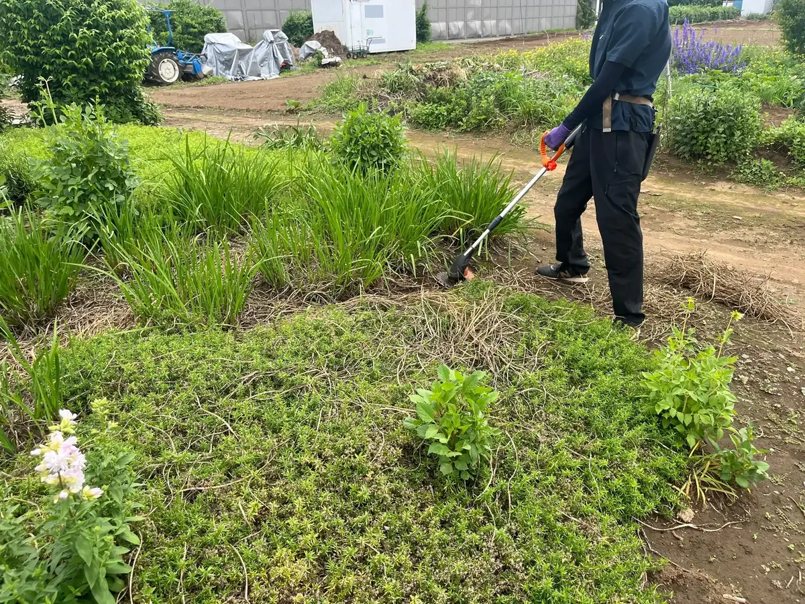

機械除草
機械で根元付近から刈ります。料金を抑えやすく、広い場所を短時間で作業しやすい方法です。
- 料金300円〜 / 1㎡
川越市の草刈り・除草
伸びた雑草を短時間で刈る機械除草と、根から取り除く人力除草に対応しています。庭の状況に合わせて作業方法をご案内します。

作業方法によって料金と仕上がりの特徴が異なります。
機械で根元付近から刈ります。料金を抑えやすく、広い場所を短時間で作業しやすい方法です。
手作業で根から取り除きます。再び生えてくるまでの間隔を長くしやすい方法です。
広い場所を早く整えたい場合は機械除草、植木・設備・壊したくない物が近い場所や、根から取りたい場合は人力除草が向いています。
機械除草を中心に検討します。
人力除草を中心に検討します。
はい。面積や現場状況を確認してご案内します。
可能です。処分量に応じて別途処分費がかかります。
今後の管理負担を減らしたい場合は、防草シートや砂利敷きもご相談いただけます。
正式な料金は、作業条件や必要に応じた現地確認のうえで分かりやすくご案内します。